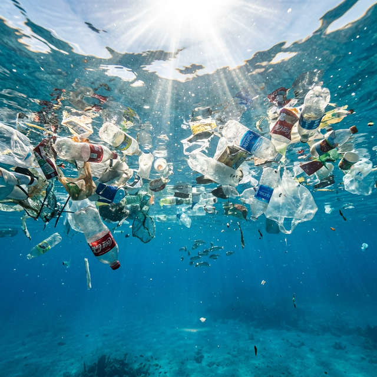

Reduce Plastic Pollution
Over 8 million tonnes of plastic enter the ocean every year. Small changes in your daily habits can create a massive impact on reducing ocean plastic waste.
- Switch to reusable bags, bottles, and straws to cut single-use plastic
- Participate in local beach and waterway cleanup events
- Support businesses that use sustainable, plastic-free packaging